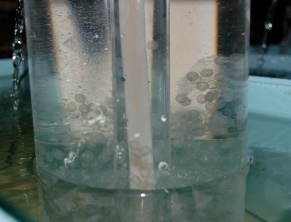

Water hardness effects on hatching success of Asian carp eggs

Previously published works, based on one laboratory study and an examination of the existing range of Asian carps in the United States, had indicated that Asian carps would be limited to moving into areas with high water hardness. The previous laboratory study indicated that the eggs would burst or not develop correctly in soft water.
In separate studies, bighead carp and silver carp were raised in waters of varying hardness. Survival, correct development, and hatching success were monitored. Additionally, a search of the Asian literature (including Chinese-language literature) on water hardness in areas where Asian carp are native was performed.
If soft water limits Asian carp hatching success, then this would mean that large areas of the Great Lakes and east and west coast drainages would not be at risk of Asian carp establishment.
- Both bighead carp and silver carp developed normally and the eggs hatched normally in all water hardnesses tested, including very soft water.
- The Yangtze River, evolutionary cradle of silver carp and bighead carp, contains extremely soft water.
- Soft water is not likely to inhibit the invasion of bighead and silver carps.
A journal article in Transactions of the American Fisheries Society, Effect of water hardness and dissolved-solid concentration on hatching success and egg size in bighead carp.
A journal article in North American Journal of Fisheries Management, Effects of water hardness on size and hatching success of silver carp eggs.
Duane Chapman, dchapman@usgs.gov
Columbia Environmental Science Center
573-875-5399
Mark Gaikowski, mgaikowski@usgs.gov
Upper Midwest Environmental Sciences Center
608-781-6284